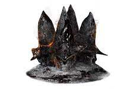
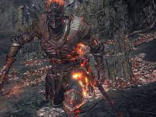

DS3 es el juego que más controlo de la trilogía, en este juego naces como un
Latente un ser nacido de la ceniza que en su vida anterior ha intentado enlazar
la llama pero ha fallado y has resucitado para reunir a los señores de la ceniza,
sigue la cronología establecida, en este caso debes enlazar la llama tú mismo, tu
trabajo es reunir los restos de los anteriores señores de la ceniza que han huído
de sus tronos para no enlazar la llama ya que quien debía enlazarla (el príncipe
Lothric) no quería hacerlo, y eso ha desencadenado un estado de podredumbre y
marchitación en todo el mundo desesperante, seas o no capaz, ya que puedes arder
con la llama o puedes usar el poder de la llama en tu beneficio, apagandola y
dejando que empieze la era de la oscuridad o usándola para convertirte en el señor
de la oscuridad.
Para completar este juego tu objetivo es derrotar a los cuatro señores de la ceniza
que han huido de sus tronos y reunir sus restos en ceniza para encargarte tú de lo
que ellos han decidido no hacer, avivar la llama. Tu primer objetivo serán los
Vigilantes del Abismo, los Vigilantes son un grupo de soldados que tenían como
inspiración al caballero lobo o Artorias, tenían un estilo de combate muy
constante y coordinado que confundía a sus enemigos, al usar la sangre de lobo no
solo mejoraron físicamente, sino también en esencia, ya que juntaron todas sus
almas en una. El único problema es que los Vigilantes del Abismo tenían miembros
corruptos que eran cambiados lentamente por el mismo Abismo, los Vigilantes
enlazaron la llama y regresaron como Señores de la Ceniza, por eso sus cenizas son
de varios de ellos.

Siguiendo con el orden del juego hay que entrar en la ciudad de Irithyll atravesando
una barrera pero para ello antes hay que derrotar a los Diáconos de la Profundidad,
que custodian un muñeco necesario para atravesar dicha barrera. Irithyll es solo un
paso hacia la antigua Anor Londo, ciudad que ya se conoce del primer juego, y en la
arena donde peleamos anteriormente contra Ornstein y Smough nos encontraremos al
segundo señor de la ceniza, Aldrich el Devoradioses, este jefe es un sacerdote que
residía en la catedral de la profundidad junto con los Diáconos, este tuvo unas
visiones sobre la era del mar profundo, una distinta a la era de la llama, por culpa
de estas visiones acabó desarrollando una afición por el canibalismo y se convirtió
en una masa similar a una babosa gigante, después se enteró que en Anor Londo había
dioses viviendo y viajó hasta allí para devorarlos, este se comió a un hijo de Gwyn
en el acto y esa es la parte humana que vemos de él en el combate, es el cuerpo de
Gwyndolin la Luna Oscura, hijo de Gwyn y otro enemigo del primer juego, se rumorea que
Gwyndolin en Dark Souls 1 era una ilusión ya que si el no muerto elegido lo hubiera
derrotado Aldrich no se lo habría comido, realmente no se sabe porque Aldrich terminó
por enlazar la llama, pero así lo hizo.

El penúltimo señor de la ceniza se encuentra debajo de Irithyll, volviendo un poco
atrás podremos llegar a la Capital Profanada justo después de la Mazmorra de Irithyll
donde se encuentra la llama profanada, esta llama la creó la bruja de Izalith para
intentar replicar la primera llama, también la conocemos como la llama del Caos,
pero no pudo replicarla y se descontroló, convirtiendo a la bruja y a sus hijas en el
Lecho del Caos, esta llama está controlada en la entrada al jefe considerado el tercer
señor de la ceniza, este es Yhorm el Gigante, él es el hijo de un conquistador, este
entregó a su pueblo, que no eran gigantes, una espada matagigantes para que confiaran
en él, por desgracia la Capital Profanada era amenazada por la Llama Profanada y con
ella su pueblo, para evitar la destrucción de estos Yhorm se ofreció como señor de la
ceniza pero ni con ese sacrificio consiguió salvar a su pueblo y acabaron todos
calcinados. Una vez lo derrotamos seremos teletransportados a la recta final del juego,
el Castillo de Lothric.
En el camino principal tenemos a la Bailarina del valle Boreal, convertida en ese
monstruo a manos del Pontífice Sulyvahn y la Armadura de Asesino de Dragones que irónicamente
tiene a dos dragones apoyándolo en los laterales de la arena. Después de derrotarlo
solo quedaría pasar el Gran Archivo que es una biblioteca gigante.
Ahora llegaremos a los aposentos del Príncipe Lothric que nació muy débil y que se negó
a convertirse en señor de la ceniza y su hermano Lorian que era su escudero y protector,
como eran inseparables Lorian decidió compartir la maldición de Lothric que lo hacía tan
débil con sigo mismo, eso lo hizo mudo y con las piernas inservibles, pero eso no evita
que pueda combatir, ellos dos junto a Ocelotte eran hijos de Oceiros y la reina de
Lothric, personaje al que no se conoce, la familia Lothric quería crear a un hijo lo
suficientemente fuerte para enlazar la llama, pero al ver que no pudieron quisieron
obligar a Lothric a enlazarla, ante esto los dos hermanos Lothric y Lorian huyeron lo
suficientemente lejos para ver la llama apagarse lentamente.
Cuando los derrotemos podremos poner las cenizas de cada señor de la ceniza en su trono
y viajar al horno de la primera llama donde lucharemos contra Alma de Ceniza, una mezcla
de todos los anteriores señores de la ceniza, incluyendo a Gwyn entre ellos. Cuando
acabemos con él podremos elegir entre enlazar la primera llama, dejar que se apague
o usurparla para convertirnos en el señor de la oscuridad.

Como zona extra existe el Pico de Archidragon, es la zona donde huyeron los dragones
cuando fueron vencidos por Gwyn, también es donde reside el primogénito de Gwyn, es
el jefe principal de la zona y recibe el nombre de el Rey Sin Nombre, se le llama así
a pesar de ser el hijo del rey porque en la guerra de dragones se alió con un dragón
al que luego llamó el Rey de la Tormenta, y con los otros dragones, entonces lo
despojaron de su nombre y lo desterraron, se dice que con él también se fué Ornstein
quien era su mano derecha y que el Ornstein que vemos en Dark Souls 1 en la pelea de
Ornstein y Smough es una ilusión.
Hay 2 DLC, en el primero viajas a Ariandel que es como llaman al mundo pintado de
Ariamis del primer juego, Gael un personaje importante te pide que viajes allí a
través de lo que le queda de cuadro y enciendas la llama, Ariandel como en el
primer juego está nevado pero ahora sufre de la podredumbre que es como llaman a
lo que sería la era de la oscuridad, es decir cuando la llama se está apagando y
hay que enlazarla para que se alargue la era del fuego, pero en este caso enlazarla
sirve para acabar con ese mundo pintado y dar paso al siguiente mundo pintado, que
es el que estaba haciendo la pintora o la Señora de la que habla Gael. Para
completar esta tarea hay que derrotar a la Hermana Friede que apoya que la era de
la oscuridad perdure, hay que derrotarla ya que ha convencido al Padre Ariandel
que es el responsable de enlazar la Llama allí en Ariandel, y como no la ha
enlazado se extiende la podredumbre, tu trabajo es acabar con Friede para que la
llama en Ariandel puede extenderse y quemar el mundo que al fin y al cabo es su
destino, al acabar con Friede la pintora te dice que necesita cierto pigmento y
que resulta ser el alma oscura que estaba en manos del Furtivo Pigmeo y que es
con la que se creó a toda la humanidad, también te dice que Gael ha emprendido
una misión para conseguir este nuevo pigmento.
Esto da paso al segundo DLC en el que viajas a la ciudad anillada, esto va de nuevo
conectado con el primer juego, el furtivo pigmeo que es quién creó a la humanidad
haciendo uso del alma oscura. Se le regaló a él y a los pigmeos una ciudad en el
fin del mundo, la ciudad anillada, y a su hija Filianore, mientras Filianore
durmiera la ciudad prevaleceria, cuando llegas donde está Filianore encuentras a
Gael, que viajó antes que tu y descubrió que el pigmento del alma oscura no se
puede conseguir porque se sacaba de la sangre de los pigmeos y estos tenían la
sangre seca, este pigmento es el que le había pedido la pintora, al ver que no
podía cumplir su misión empezó a matar a los pigmeos y a comérselos, pero el alma
oscura era demasiado poderosa y acabó mutando su cuerpo y distorsionando su mente.
Al acabar con la vida de Gael podemos entregar su sangre como pigmento a la pintora
para que acabe el cuadro que sustituirá a Ariandel, ya que la sangre de Gael es el
equivalente en ese momento a la Dark Soul.